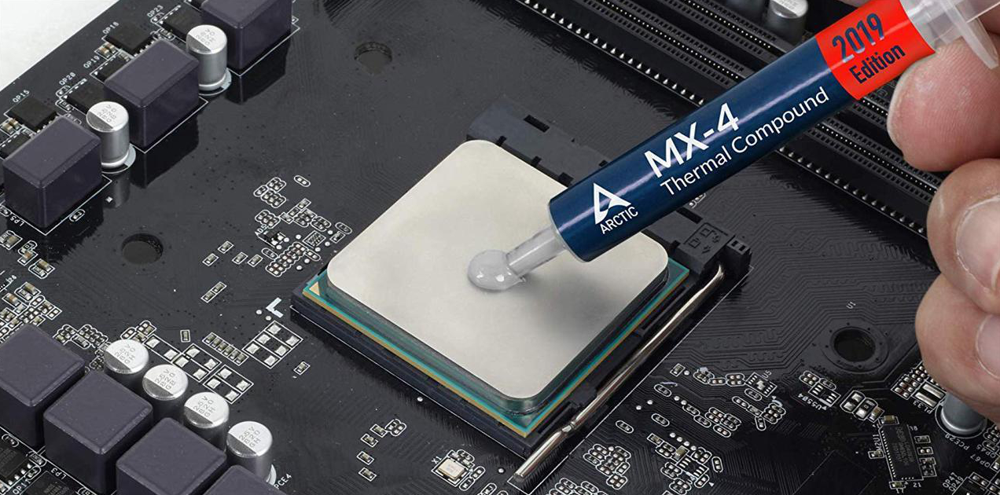
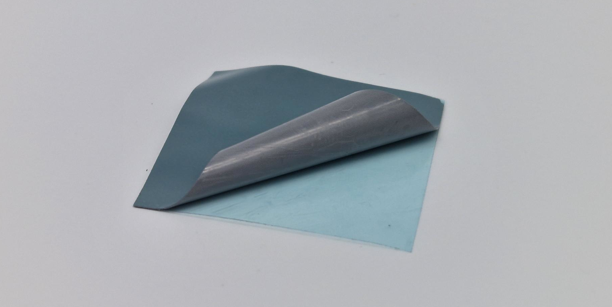

Um ponto extremamente importante e que nem sempre é levado a sério é a refrigeração de uma placa de vídeo. Naturalmente, quanto mais energia uma máquina consome, mais calor ela irá gerar, então ela precisará de um sistema de refrigeração mais robusto. Por isso placas com TDP maior geralmente vem com dissipadores maiores e com mais ventoinhas.
Além disso, é importante manter um fluxo de ar adequado dentro do gabinete para impedir o superaquecimento dos componentes. Geralmente é dito que é essencial manter "pressão positiva" (mais ventoinhas empurrando ar para dentro do que para fora), mas na prática o importante é tirar ar quente de dentro do gabinete o mais rápido possível e jogar ar frio nos reguladores de voltagem (VRM's).
Finalmente, um ponto de incessantes discussões e desinformação é o material de interface térmica a ser utilizado na placa de vídeo: pasta térmica, almofada térmica, metal líquido ou material de mudança de fase?
Na prática, um material de mudança de fase como o Honeywell PTM7950 é o que há de melhor para resfriamento de componentes eletrônicos; o mesmo possui todas as vantagens das melhores soluções e nenhuma das desvantagens fora a difícil aplicação.
